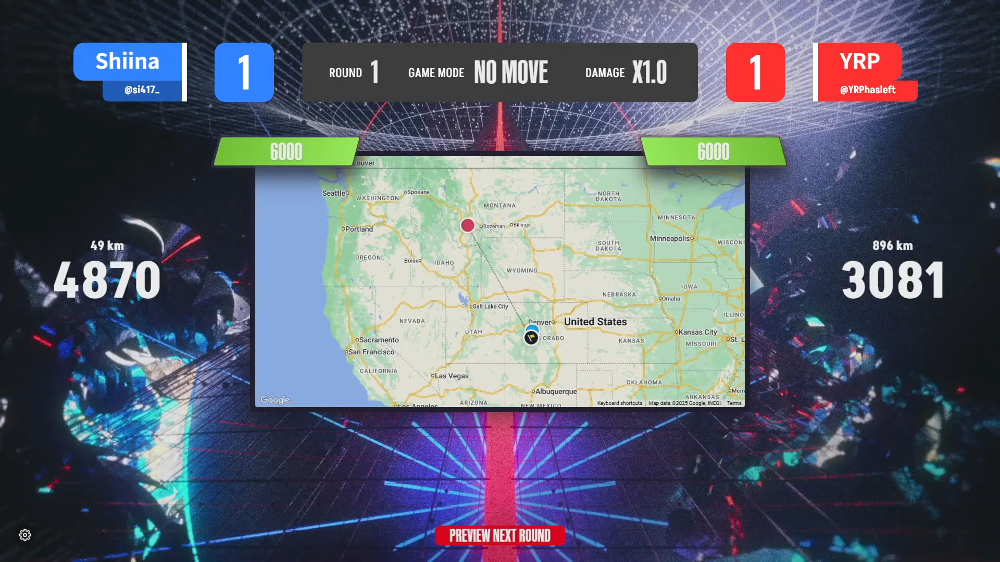

RASHINBAN 2025 オンライン予選第1回 結果
8月9日(土)、「RASHINBAN 2025」オンライン予選第1回が終了し、しいな選手、なうろ選手が本戦へと駒を進めました。予選第1回最終試合、しいな選手 vs なうろ選手の直接対決は2-0でしいな選手が勝利しました。
予選ハイライト
大盛況の中で行われた予選第1回試合において、とくに盛り上がったラウンドを二つ紹介します。 まずは、upper bracket semifinal しいな選手とYRP選手の対戦、第三試合No MoveのRound 1。 第一試合、第二試合と白熱した戦いが続き、第三試合は看板も電柱もないこちらの未舗装道から始まりました。


両者アメリカまでは当てたものの、しいな選手が精密に地域を当て、4800点を超えるGuess！ Round1から大きく差がつくゲームとなりました。
また、upper bracket final しいな選手となうろ選手の対戦、第一試合MoveのRound12。


両者ともに地名が見つからない中で、なうろ選手が、街の雰囲気・道の角度・川の方向だけでアルゼンチンの小さな街を当てる素晴らしいGuess！勝敗を分けるRoundとなりました。